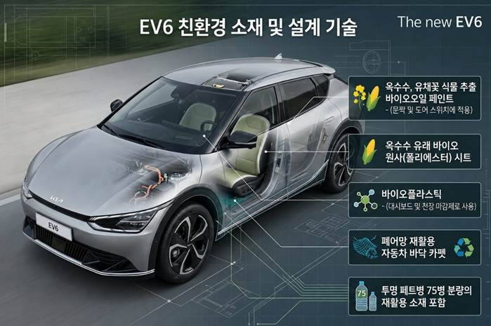
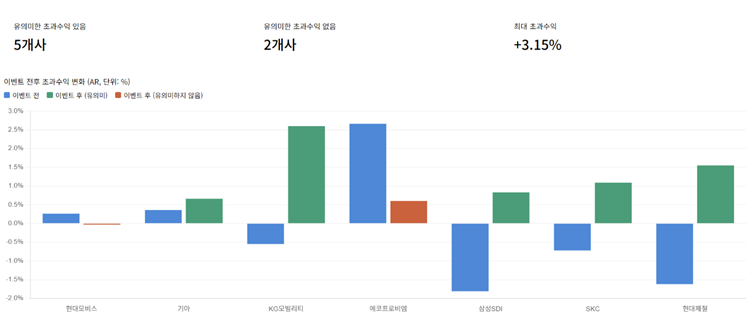
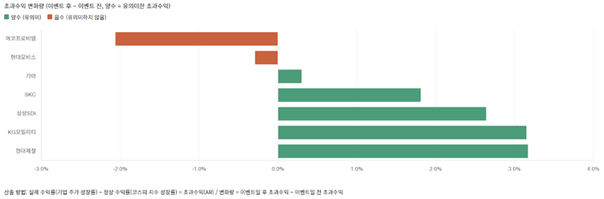
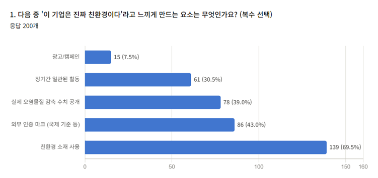
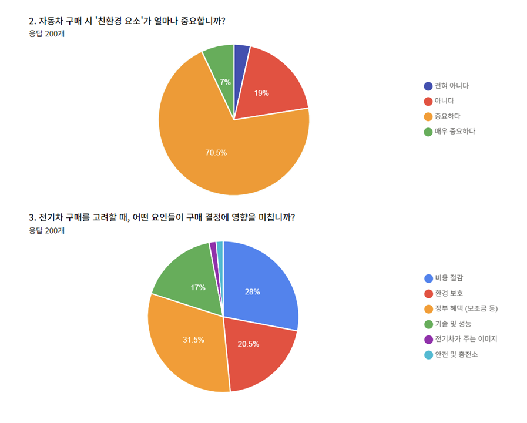
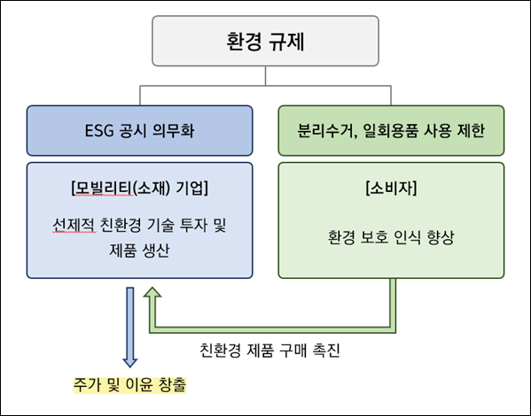

피할 수 없다면 이용해라If You Can't Avoid It, Use It
친환경 정책으로 돈 버는 기업들Companies Profiting from Eco-Friendly Policy
미지, 채경Miji, Chaekyung
피할 수 없다면 이용해라! : 친환경 정책으로 돈 버는 기업들If You Can't Avoid It, Use It! — Companies Profiting from Eco-Friendly Policy
7팀_친환경소재Team 7 — Eco-Friendly Materials
리드 한미지, 서브 이채경Lead: Han Miji, Sub: Lee Chaekyung
INTRO. 친환경, 선택이 아니라 강제된 룰INTRO. Eco-Friendly: Not a Choice, but a Forced Rule
글로벌 친환경 트렌드와 자동차 산업의 변화Global Eco-Friendly Trends and Changes in the Auto Industry
환경 규제의 의무화Mandating Environmental Regulation
PART 1. 친환경은 진짜 돈이 될까? – 기업의 수익성 분석PART 1. Can Eco-Friendly Actually Make Money? — Corporate Profitability Analysis
이벤트 스터디: 친환경 행동 발표와 주가 반응 분석Event Study: Analysis of Eco-Friendly Action Announcements and Stock Price Reactions
회귀분석: 친환경 전략과 영업이익률의 관계Regression Analysis: The Relationship Between Eco-Friendly Strategy and Operating Profit Margin
PART 2. 친환경은 어떻게 팔리는 가치가 되었나? – 소비자 인식조사PART 2. How Did Eco-Friendly Become a Sellable Value? — Consumer Perception Survey
친환경 제품에 대한 인식과 소비 계기Perception of Eco-Friendly Products and Triggers for Consumption
전기차/수소차에 대한 인식과 구매 요인Perception of EVs/Hydrogen Vehicles and Purchase Factors
기업의 친환경 행동에 대한 소비자 반응Consumer Responses to Corporate Eco-Friendly Actions
CONCLUSION. 인식에서 이윤으로: 친환경 규제가 만든 선순환 구조CONCLUSION. From Perception to Profit: The Virtuous Cycle Created by Eco-Friendly Regulation
규제로 인해 만들어진 이중 구조The Dual Structure Created by Regulation
모빌리티 산업에 대한 제언Recommendations for the Mobility Industry
옥수수기름으로 달리는 차를 들어본 적 있는가?Have You Ever Heard of a Car That Runs on Corn Oil?
후라이팬에 두르는 그 옥수수기름이 자동차를 굴러가게 할 원동력이 된다니, 꽤 놀라운 사실일 것이다. 옥수수 뿐만 아니라 콩, 팜유 같은 식물성 원료에서 바이오 디젤이라는 원료가 추출된다. 경유를 대체할 수 있는 이 바이오 디젤은 식물이 자라면서 이산화탄소를 흡수하는 습성에 따라, 배출되는 탄소가 상쇄되는 효과를 가져온다.The corn oil you drizzle in a frying pan becoming the driving force that moves a car — that's quite a surprising fact. Biodiesel is extracted not only from corn, but from plant-based raw materials like soybeans and palm oil. This biodiesel, which can replace diesel, brings a carbon-offset effect as plants absorb carbon dioxide while growing.
뿐만 아니라, 옥수수 및 사탕수수에서 추출한 전분을 원료로 합성해 만들어진 바이오 플라스틱도 주목받고 있다. 석유 기반 플라스틱에 비해 제조 과정에서 배출되는 온실가스가 훨씬 적고, 자연 분해되는 생분해성을 지니고 있다. 바이오 플라스틱은 자동차 내부의 대시보드, 천장 마감재로 사용되기도 한다. 탄소를 크게 저감 시키는 바이오 소재와 폐기물을 재활용하여 만든 부품이 자동차 곳곳에 녹아 있다. 기아의 EV6 모델이 대표적인 사례다.What's more, bioplastics synthesized from starch extracted from corn and sugarcane are also drawing attention. They emit far fewer greenhouse gases during manufacturing than petroleum-based plastics, and have biodegradable properties that allow natural decomposition. Bioplastics are even used as dashboard and ceiling trim materials inside automobiles. Bio-materials that dramatically reduce carbon and parts made from recycled waste are woven into every corner of modern cars. Kia's EV6 model is a representative example.

이러한 친환경 소재, 부품을 적용하는 움직임의 시작은 어디서부터일까? 바로, 전 세계적인 환경 규제일 것이다. 제품을 생산, 유통, 판매하는 데 있어 환경에 미칠 영향을 고려하고, 심각한 환경 파괴를 막도록 제한하는 규제는 선택이 아닌 의무로 변화하고 있다.Where does this movement to apply eco-friendly materials and parts begin? The answer is global environmental regulation. Regulation that considers environmental impact in producing, distributing, and selling products — and restricts severe environmental destruction — is transforming from an option into an obligation.
친환경, 선택이 아니라 강제된 룰Eco-Friendly: Not a Choice, but a Forced Rule
유럽연합은 2035년부터 내연기관 신차 판매를 전면 금지하기로 했다. 국내에서는 ESG 공시 의무화가 본격화되면서, 기업이 탄소 배출량과 재생에너지 전환 비중을 구체적인 수치로 공개해야 하는 시대가 열렸다. 공시 의무를 제대로 이행하지 못한 기업은 ESG 평가 등급 하락은 물론, 파트너십 공급망에서 배제될 위험까지 감수해야 한다. 이 규제가 얼마나 무거운지는 숫자가 보여준다. 현대제철의 분석에 따르면, 오염물질 저감 투자 없이 사업을 그대로 운영할 경우 2025년 배출권 구매액과 과징금 등으로 인한 재무적 손실이 최대 5,230억 원에 달할 것으로 추정된다. 즉, 환경 규제는 기업들의 부담 증가 요인으로 작용하고 있다.The European Union has decided to ban the sale of new internal combustion engine vehicles starting in 2035. Domestically, with mandatory ESG disclosure becoming serious, an era has opened where companies must publicly disclose their carbon emissions and renewable energy transition ratios in specific figures. Companies that fail to properly fulfill their disclosure obligations must bear not only ESG rating downgrades but even the risk of being excluded from partnership supply chains. The numbers show how heavy this regulation is. According to Hyundai Steel's analysis, if operations continue without investment in pollutant reduction, financial losses from emissions permit purchases and fines alone could reach up to 523 billion won in 2025. In other words, environmental regulation is functioning as a factor increasing the burden on companies.
그런데, 어떤 기업들은 이러한 비용 부담에도 불구하고 친환경 기술 투자와 ESG 전략을 적극적으로 확대하고 있다. 새로운 탄소 저감 기술을 개발하려고 힘을 쓰거나, 친환경 부품 사업에 몇 조씩 투자를 하는 것처럼 말이다. 이는 단순히 규제를 준수하기 위한 수동적인 대응이 아니라, 오히려 ‘새로운 시장 기회’로서 활용하고 있다고 해석할 수 있다.Yet some companies are actively expanding eco-friendly technology investment and ESG strategy despite this cost burden — working to develop new carbon reduction technologies, or investing trillions of won in eco-friendly parts businesses. This can be interpreted not as passive compliance with regulation, but as actively utilizing it as a 'new market opportunity.'
그렇다면, 기업들은 환경 규제를 어떻게 새로운 기회로 전환하고 있을까?So how are companies converting environmental regulation into new opportunities?
우리는 친환경 행동이 기업의 실제 수익으로 연결되는지 그 연결고리를 살펴보고, 소비자가 반응하는 진짜 친환경의 실체를 파헤쳐 보고자 한다. 그리고 궁극적으로 기업이 살아남기 위해선 친환경 그 자체가 아닌, 소비자의 지갑을 열게 할 다른 가치를 제안해야 하는 이유를 알아보겠다.We want to examine the link between eco-friendly actions and companies' actual profits, and dig into the real substance of eco-friendliness that consumers respond to. And ultimately, we will explore why companies — to survive — must propose not eco-friendliness itself, but other values that open consumers' wallets.
PART 1 - 친환경은 진짜 돈이 될까?PART 1 — Can Eco-Friendly Actually Make Money?
규제가 의무라면, 그 의무가 실제 수익으로 이어지는 지를 먼저 따져봐야 한다. 우리는 두 가지 방식으로 이를 검증했다.If regulation is an obligation, we must first examine whether that obligation translates into actual profits. We verified this in two ways.
| 이벤트 스터디-주가분석| Event Study — Stock Price Analysis
친환경 기술이나 신소재 도입에 투자할수록, 기업의 주가는 상승하고 더 많은 이익을 창출할 수 있을까? 이 질문에 대해 먼저 살펴보자. 사실, 투자자들은 이미 답을 알고 있을지도 모른다. 글로벌 지수평가사 MSCI 보고서에 따르면, ‘ESG 등급이 높은 기업은 더 나은 수익 성장과 안정적인 주가 흐름을 보였다’고 한다. 또한 등급이 낮은 기업들에 비해 장기간에 걸쳐 꾸준히 시장을 초과하는 수익률을 기록했다고도 덧붙였다. 즉, ESG 등급이 높을수록, 지속가능경영을 추구할수록 더 높은 수익률 창출로 이어지는 것이다.The more you invest in eco-friendly technology or new material adoption, the more a company's stock price rises and the more profits it can generate — is that true? Let's look at this question first. In fact, investors may already know the answer. According to a report by global index rater MSCI, 'companies with higher ESG ratings showed better earnings growth and more stable stock price movement.' It also added that they consistently outperformed the market over the long term compared to lower-rated companies. In other words, the higher the ESG rating and the more a company pursues sustainable management, the higher the return it generates.
그렇다면 국내 기업들은 어떨까? 우리는 ESG와 지속가능경영에 더해, 환경친화적 행동에 대한 투자자들의 긍정적인 반응을 포착하기 위해서 간단한 분석 틀을 설정한 후 ‘기업의 친환경 행동과 주가 상승 간 상관관계’를 살펴보았다. 먼저, 기업의 친환경 행동은 친환경 소재를 신규로 도입하거나 개발 사업에 대규모 투자한 경우로 설정한 후, 도입 및 투자를 발표한 날짜의 전후 초과수익을 비교해 유의미한 주가 성장이 있는지 확인하고자 완성차 기업 3곳과 자동차 소재/부품 제조 기업 4곳을 분석했다.So what about domestic companies? In addition to ESG and sustainable management, we set up a simple analytical framework to capture investors' positive reactions to eco-friendly actions and examined the 'correlation between corporate eco-friendly actions and stock price increases.' First, we defined corporate eco-friendly actions as cases of newly adopting eco-friendly materials or making large-scale investment in development projects, then analyzed 3 automakers and 4 auto materials/parts manufacturers to verify whether there was meaningful stock price growth by comparing excess returns before and after announcement dates.
[완성차 기업][Automakers]
기아Kia
2024년 11월 17일, 자원 순환과 천연 재료를 활용해 차량 부품을 제조하는 친환경 신소재 개발 성과를 집약한 ‘EV3 스터디카’를 최초 공개. 총 22종의 친환경 신소재 기술을 개발, 이를 69개의 실제 차량 부품으로 재탄생 시킴.November 17, 2024: World premiere of the 'EV3 Study Car,' which concentrates achievements in eco-friendly new material development that manufactures vehicle parts using resource circulation and natural materials. Developed a total of 22 types of eco-friendly new material technologies, reborn as 69 actual vehicle parts.
KG모빌리티KG Mobility
2023년 7월 31일, 중형 전기 SUV ‘토레스 EVX’의 출시 계획을 발표. 사명 변경 및 KG모빌리티 출범 이후 선보이는 첫 번째 순수 전기차 모델로서, 친환경차 시장 진출을 본격적으로 확대.July 31, 2023: Announced launch plans for the mid-size electric SUV 'Torres EVX.' As the first pure EV model following the name change and KG Mobility's launch, it significantly expands entry into the eco-friendly vehicle market.
[자동차 부품/소재 제조 기업][Auto Parts/Materials Manufacturers]
현대모비스Hyundai Mobis
2021년 12월 13일, 탄소중립 달성을 위한 ‘Green Transformation to 2045 Net Zero’ 로드맵 - 국내외 사업장의 전력 사용을 100% 재생에너지로 전환하고, 생산 과정 및 공급망 전반의 탄소배출 저감을 추진하는 중장기 탄소중립 전략을 공개.December 13, 2021: Unveiled the 'Green Transformation to 2045 Net Zero' roadmap for achieving carbon neutrality — a mid-to-long-term carbon neutrality strategy that converts all domestic and overseas operations to 100% renewable energy and pursues carbon emission reduction throughout the production process and supply chain.
에코프로비앰EcoPro BM
2024년 9월 25일, 전기차 배터리의 주행거리와 에너지 효율을 높일 수 있는 차세대 고성능 양극재 개발 성과를 발표. 양극재 기술을 기반으로 글로벌 전기차 배터리 시장 경쟁력 강화 및 친환경 모빌리티 소재 사업 확대 전략을 제시.September 25, 2024: Announced development achievements of next-generation high-performance cathode materials that can increase EV battery range and energy efficiency. Presented a strategy to strengthen competitiveness in the global EV battery market and expand eco-friendly mobility materials business based on cathode material technology.
삼성 SDISamsung SDI
2022년 3월 14일, 기존 리튬이온 배터리의 액체 전해질을 고체로 대체하여 화재 위험을 낮추고 에너지 밀도를 높인 ‘전고체 배터리’ 양산 시작. 수원에 파일럿 라인 착공.March 14, 2022: Began mass production of 'all-solid-state batteries' that replace the liquid electrolyte of conventional lithium-ion batteries with solid material, reducing fire risk and increasing energy density. Groundbreaking of pilot line in Suwon.
SKCSKC
2023년 7월 4일, 2차전지/반도체/친환경 등 3개 사업 분야에 5조원 이상을 투자하는 중장기 사업 계획 발표.July 4, 2023: Announced a mid-to-long-term business plan to invest more than 5 trillion won across three business areas: secondary batteries, semiconductors, and eco-friendly.
현대제철Hyundai Steel
2026년 2월 3일, 기존의 고로 생산 제품보다 탄소 배출량을 20% 줄인 탄소저감강판 ‘하이에코스틸’ 세계 최초로 양산 시작.February 3, 2026: World's first mass production of 'Hi-Eco Steel,' a carbon-reduced steel sheet that cuts carbon emissions by 20% compared to conventional blast furnace products.
분석 방법은 다음과 같다.The analysis method is as follows.
실제 수익률(기업 주가의 성장률) - 정상 수익률(코스피 지수의 성장률) = 초과수익Actual Return (company stock growth rate) – Normal Return (KOSPI index growth rate) = Excess Return
이벤트 일 후 초과수익 - 이벤트 일 전 초과수익 > 0 (양수일 경우 유의미한 초과 수익 있음)Excess Return After Event Day – Excess Return Before Event Day > 0 (if positive, meaningful excess return exists)
총 7개의 기업의 이벤트 발표일 전후 5일까지의 주가와, 코스피 지수를 표로 나열하고, 이벤트일 후 초과수익과 이벤트일 전 초과수익이 양수인지, 음수인지 확인했다.We tabulated stock prices up to 5 days before and after the event announcement dates for all 7 companies, along with the KOSPI index, and verified whether excess returns after the event day and excess returns before the event day were positive or negative.


다만 이러한 결과를 모든 기업에 동일하게 적용하기에는 한계가 있다. 주가는 특정 이벤트가 공식적으로 발표되기 이전부터 시장의 기대감이 선반영되기도 하고, 실제 실적보다는 향후 성장 가능성에 대한 투자자들의 심리가 더 크게 작용하기도 하기 때문이다. 그럼에도 일부 기업에서는 이벤트 이후 초과수익률이 뚜렷하게 개선되는 모습을 보였고, 이를 통해 친환경 전략이 투자자들의 긍정적인 반응과 연결될 가능성을 확인할 수 있었다.However, there are limits to applying these results uniformly to all companies. Stock prices sometimes pre-reflect market expectations before a specific event is officially announced, and investor psychology about future growth potential can play a larger role than actual performance. Nonetheless, some companies showed clear improvement in excess return rates after the event, confirming the possibility that eco-friendly strategy connects to investors' positive reactions.
| 회귀분석| Regression Analysis
그렇다면, 단순 주가가 아닌 기업들이 친환경 전략을 통해 “실제로” 돈을 벌었을까? 이를 알아보기 위해서 기업의 친환경 전략이 영업이익률에 어떠한 영향을 미치는지 직접 분석했다.So did companies 'actually' make money through eco-friendly strategy — not just in stock price? To find this out, we directly analyzed how companies' eco-friendly strategies affect operating profit margins.
가설Hypothesis
친환경 전략을 적극적으로 수행할수록, 안정적인 수익 구조를 유지할 것이다.The more actively a company pursues eco-friendly strategy, the more stable its profit structure will be.
분석대상Analysis Subjects
자동차 및 부품, 배터리, 소재 제조 기업 11곳 * 기업 11곳 X 2024~2022 3개년 → n=30 (누락 데이터 3개 제외)11 automobile, parts, battery, and materials manufacturers * 11 companies × 3 years (2022–2024) → n=30 (excluding 3 missing data points)
독립변수Independent Variables
E/S/G 중 E 등급, 친환경 투자액, 친환경 소재 매출 비중E (Environment) rating among E/S/G, eco-friendly investment amount, eco-friendly materials revenue share
종속변수Dependent Variable
영업이익률 (영업이익 / 매출액)Operating Profit Margin (Operating Profit / Revenue)
회귀분석Regression Analysis
영업이익률i = β0 + β1(E등급)i + β2(친환경 투자액)i + β3(친환경 매출 비중)i + εi * E등급: A+ ~ D까지의 등급을 5~0의 숫자로 반영함.Operating Profit Margin_i = β0 + β1(E Rating)_i + β2(Eco-Friendly Investment)_i + β3(Eco Revenue Share)_i + ε_i * E Rating: Ratings from A+ to D are reflected as numbers from 5 to 0.
본 연구에서는 정량적인 분석을 위해 위와 같은 세 가지 독립변수를 설정했다.In this study, we established the above three independent variables for quantitative analysis.
ESG 등급: 기업이 친환경 행동을 잘 수행하고 있는지 판단할 수 있는 가장 정확한 지표는 한국 ESG 기준원이 부여한 ESG 등급이다. 이 기관은 매년 기업공시 자료를 수집해 S~D 까지의 등급을 부여하고 있는데, E/S/G 중 E(Environment)등급 데이터만 반영하여 ‘등급이 높아질수록, 영업이익률도 증가(β1 > 0)’하는지를 탐구해볼 것이다.ESG Rating: The most accurate indicator for judging whether a company is performing eco-friendly actions well is the ESG rating assigned by the Korea ESG Standards Institute. This organization collects corporate disclosure data annually and assigns grades from S to D — we will explore whether higher E (Environment) grades correlate with higher operating profit margins (β1 > 0).
친환경 투자액: 기업이 친환경 전략을 수행하기 위해 실제로 얼마나 자원을 투입하고 있는지 보여주는 지표다. 단순한 선언이 아닌, 실제 투자된 금액을 반영하면 ‘친환경 투자액이 증가할수록, 영업이익률도 증가(β2 > 0)’하는지 살펴볼 수 있다.Eco-Friendly Investment Amount: An indicator showing how much resources a company is actually allocating to execute eco-friendly strategies. By reflecting actual invested amounts rather than mere declarations, we can examine whether increased eco-friendly investment correlates with higher operating profit margins (β2 > 0).
친환경 매출 비중: 기업의 친환경 사업이 실제 수익 구조에서 어느 정도 비중을 차지하는지 나타내는 지표로, 해당 사업이 매출 성과로 연결되고 있는지 직관적으로 보여준다. 마찬가지로 ‘친환경 매출 비중이 높을수록, 영업이익률도 증가(β3 > 0)’하는지 살펴볼 예정이다.Eco-Friendly Revenue Share: An indicator showing what proportion of a company's revenue structure its eco-friendly business accounts for, intuitively demonstrating whether this business is translating into sales results. Similarly, we will examine whether higher eco-friendly revenue share correlates with higher operating profit margins (β3 > 0).
변수Variable
p-value 수준p-value Level
해석Interpretation
ESG 등급 (환경)ESG Rating (Environment)
0.15 ~ 0.30
미흡. 방향성(양의 관계)은 보이나, 표본 내에서 절대적인 결정 요인으로 보기 어려움.Insufficient. Shows direction (positive relationship), but hard to view as an absolute determining factor within the sample.
친환경 투자액Eco-Friendly Investment Amount
0.40 이상≥ 0.40
유의하지 않음. 기업마다 투자 규모의 편차가 너무 크고, 단기 이익률과의 상관성이 낮음.Not significant. Variance in investment scale between companies is too large and correlation with short-term profit margins is low.
친환경 매출 비중Eco-Friendly Revenue Share
0.01 ~ 0.04
유의함. 영업이익률 변화를 설명하는 데 가장 핵심적인 변수.Significant. The most critical variable in explaining changes in operating profit margin.
변수Variable
계수 (β)Coefficient (β)
관계 (상관성)Relationship (Correlation)
ESG 등급 (환경)ESG Rating (Environment)
β1 ~ 0.12
양(+)의 관계Positive (+) relationship
친환경 투자액Eco-Friendly Investment Amount
β2 ~ -0.05
음(-)의 관계Negative (–) relationship
친환경 매출 비중Eco-Friendly Revenue Share
β3 ~ 0.28
강한 양(+)의 관계Strong positive (+) relationship
E(Environment)등급과 영업이익률: 양의 관계등급이 높을수록 영업이익률이 완만하게 상승하는 경향을 보였다. 현대모비스, 삼성 SDI 등 A+의 높은 등급을 유지하는 기업들이 비교적으로 안정적인 이익률을 기록하고 있었다.E (Environment) Rating and Operating Profit Margin — Positive Relationship: Higher ratings showed a tendency for operating profit margins to rise gradually. Companies maintaining high A+ ratings such as Hyundai Mobis and Samsung SDI recorded comparatively stable profit margins.
친환경 투자액과 영업이익률: 음의 관계대규모 친환경 투자 지출은 단기적으로 볼 때, 영업이익률을 낮추는 요인으로 작용했다. 특히 현대모비스나 포스코퓨처엠처럼 투자액을 급격히 늘린 시점에 영업이익률이 일시적으로 정체되거나 하락하는 모습이 관찰되었다.Eco-Friendly Investment Amount and Operating Profit Margin — Negative Relationship: Large-scale eco-friendly investment expenditures acted as a factor reducing operating profit margins in the short term. In particular, at the times of sharply increasing investment amounts — as with Hyundai Mobis or POSCO Future M — operating profit margins were observed to temporarily stagnate or decline.
친환경 매출 비중과 영업이익률: 양의 관계친환경 매출 비중은 실질 수익성에 가장 긍정적인 영향을 미쳤다. 특히 엘앤에프, 삼성 SDI처럼 친환경 매출이 본업의 핵심인 경우 이익률과의 상관계수가 가장 높게 나타났다. 단순히 투자를 많이 하는 것보다 실제 매출로 연결되는 비중이 기업의 실질적인 수익성을 결정짓는 핵심 변수로 작용한 것이다.Eco-Friendly Revenue Share and Operating Profit Margin — Positive Relationship: Eco-friendly revenue share had the most positive impact on actual profitability. In particular, for companies like L&F and Samsung SDI where eco-friendly revenue is at the core of the main business, the correlation coefficient with profit margin appeared highest. The share that converts to actual revenue — more than simply investing a lot — functioned as the key variable determining a company's actual profitability.
이번 분석을 통해 흥미로운 점을 발견할 수 있었다. 기업의 친환경 전략은 단순히 좋은 일을 하는 활동에 그치지 않았다. 투자자들은 친환경 기술 투자와 미래 사업 전환에 긍정적으로 반응했고, 일부 기업에서는 이러한 전략이 실제 수익성 개선으로도 이어지는 모습을 확인할 수 있었다.Through this analysis, interesting findings emerged. Corporate eco-friendly strategy did not stop at simply doing good things. Investors responded positively to eco-friendly technology investment and future business transformation, and in some companies we could confirm that these strategies were also translating into actual profitability improvement.
HL만도가 대표적인 사례다. 2022년부터 2024년까지 전기차 플랫폼 수주 확대와 친환경 사업 비중 확대를 동시에 추진한 결과, 친환경 매출 비중은 50.1%에서 53.6%로 늘었고 영업이익은 2,480억 원에서 3,590억 원으로 성장했다. 영업이익률도 3.31%에서 4.08%로 개선됐다. 친환경 전략이 기업 이미지 제고를 넘어 실질적인 경영 성과로 이어질 수 있음을 보여준 사례다. 즉, 친환경은 온전히 비용이 아니라 기업 경쟁력과 수익성을 높이는 성장 전략으로 작용하고 있었던 것이다.HL Mando is a representative case. By simultaneously pursuing expanded EV platform orders and increased eco-friendly business share from 2022 to 2024, eco-friendly revenue share grew from 50.1% to 53.6%, and operating profit grew from 248 billion won to 359 billion won. Operating profit margin also improved from 3.31% to 4.08%. A case demonstrating that eco-friendly strategy can translate into actual business performance beyond image enhancement. In other words, eco-friendly was functioning not purely as a cost but as a growth strategy that raises corporate competitiveness and profitability.
연도Year
ESG 등급(환경만)ESG Rating (Environment only)
친환경 투자액 (차, 부품, 배터리 등)Eco-Friendly Investment (vehicles, parts, batteries, etc.)
친환경 매출 비중Eco-Friendly Revenue Share
영업이익Operating Profit
(연결)(Consolidated)
매출액 (연결)Revenue (Consolidated)
영업이익률Operating Profit Margin
2022년2022
23.21억
2480억
7.5조
2023년2023
B+
35.09억
2790억
8.4조
2024년2024
A
23.66억
3590억
8.8조
이러한 기업의 주가와 이윤 상승의 원인은 무엇일까? 기업은 이렇게 친환경 행동으로 돈을 벌고 있는데, 그 돈은 누구 주머니에서, 왜 나오는 것인가?What is the cause of this rise in corporate stock prices and profits? Companies are making money from eco-friendly actions like this — but whose pocket does that money come from, and why?
투자자들, 그러니까 소비자들은 기업이 탄소저감소재를 도입하고 신규 친환경 제품을 위한 대규모 투자를 감행하는 모습을 보며 해당 기업의 미래 성장 여지를 확신했기 때문일지 모른다. 현재 글로벌 시장은 친환경을 향해 흘러가고 있다. 소비자들 역시 환경 보호의 필요성을 강력하게 인식하고 있을 뿐만 아니라, 기업의 생산 활동을 예리하게 감시하는 주체이기도 하다. 결국 시장에서 소비자들의 선택을 받고 생존하려면 기업은 그들이 추구하는 친환경 트렌드에 부응할 수밖에 없으며, 투자자들은 이 흐름을 발 빠르게 읽고 친환경 추진 기업에 투자를 집중시킨 것이다.Investors — that is, consumers — may have been convinced of those companies' future growth potential upon seeing them adopt carbon-reduction materials and make large-scale investments for new eco-friendly products. The global market is currently flowing toward eco-friendliness. Consumers not only strongly recognize the necessity of environmental protection but are also sharp monitors of corporate production activities. Ultimately, to receive consumers' choice in the market and survive, companies have no choice but to respond to the eco-friendly trend they pursue — and investors quickly read this flow and concentrated investment in eco-friendly companies.
PART 1의 수익성 분석은 하나의 결론을 가리킨다. “친환경은 돈이 된다 - 단, 투자를 매출로 연결하는 데 성공한 기업에 한해서” 말이다. 그렇다면 그 연결고리의 반대편, 즉 소비자는 어떤 신호를 보내고 있을까?PART 1's profitability analysis points to one conclusion: 'Eco-friendly makes money — but only for companies that succeed in converting investment into revenue.' So what signals is the other end of that link — the consumer — sending?
PART 2 - 친환경은 어떻게 팔리는 가치가 되었나?PART 2 — How Did Eco-Friendly Become a Sellable Value?
그렇다면, 기업에게 기꺼이 돈을 지불하는 소비자의 마음을 들여다볼 차례이다. 우리는 설문조사 플랫폼을 통해 3일간 익명의 대중 200명을 대상으로 친환경 기업에 대해서, 그리고 자동차를 구매할 때 있어 친환경 가치가 얼마나 중요한지 물었다. 구체적인 설문조사 결과를 함께 살펴보며 소비자들이 반응하는 진짜 가치를 파헤쳐보자.Then it is time to look into the minds of consumers who willingly pay money to companies. Through a survey platform over 3 days, we asked 200 anonymous members of the public about eco-friendly companies and how important eco-friendly values are when purchasing a car. Let us examine the specific survey results together and dig into the real values that consumers respond to.
전기차 · 수소차에 대한 인식과 구매 요인Perception of EVs · Hydrogen Vehicles and Purchase Factors

소비자는 어떤 기업을 '진짜 친환경 기업'이라고 생각할까? 응답자의 69.5%는 친환경 소재를 실제로 사용하는 기업을 꼽았다. 광고·캠페인이라고 답한 비율은 7.5%에 불과했다. 소비자들은 이미 메시지보다 행동을 본다는 것이다.What company do consumers consider a 'truly eco-friendly company'? 69.5% of respondents named companies that actually use eco-friendly materials. Only 7.5% cited advertising and campaigns. Consumers already look at actions over messages.
이 간극이 바로 그린워싱이 통하지 않는 이유다. 폭스바겐 디젤게이트는 그 대가를 가장 극적으로 보여준 사례다. 친환경 디젤 기술을 홍보하던 폭스바겐이 실제로는 배출가스 수치를 조작했다는 사실이 드러났고, 수십 조 원의 벌금과 함께 브랜드 신뢰가 한순간에 무너졌다. 반면 현대자동차는 지속가능경영보고서를 통해 탄소 감축 목표와 실행 과정, ESG 리스크 관리 내용을 구체적인 수치로 공개한다. "우리는 친환경 기업입니다"라고 주장하는 대신, 외부 인증과 검증 가능한 데이터를 함께 제시하는 방식이다.This gap is precisely why greenwashing does not work. The Volkswagen Dieselgate was the most dramatic illustration of its cost. Volkswagen, which had been promoting eco-friendly diesel technology, was revealed to have actually manipulated emissions figures, and brand trust collapsed in an instant along with tens of trillions of won in fines. By contrast, Hyundai Motor publicly discloses carbon reduction targets, implementation processes, and ESG risk management content in specific figures through its sustainability report — presenting external certifications and verifiable data rather than claiming 'we are an eco-friendly company.'

그렇다면, 자동차를 구매할 때는 친환경 요소를 얼마나 중요시할까? ‘중요하다’, ‘매우 중요하다’고 답한 응답자는 전체의 77.5%였다. 소비자 10명 중 7명 이상이 친환경을 구매 기준으로 고려하고 있다는 뜻이다. 친환경 소재, 탄소 배출 저감 기능과 같은 요소들은 이제 선택 사양이 아니라 기본 조건에 가까워지고 있다.So how much do consumers value eco-friendly factors when purchasing a car? 77.5% of respondents answered 'important' or 'very important.' This means more than 7 in 10 consumers are considering eco-friendliness as a purchase criterion. Factors like eco-friendly materials and carbon emission reduction features are now approaching basic conditions rather than optional extras.
그런데 여기서 반전이 하나 있다. 소비자의 77.5%가 친환경을 중요하게 본다고 했지만, 실제로 전기차·수소차 구매를 결정하는 요인을 물었을 때 '환경 보호'를 꼽은 비율은 20.5%에 그쳤다. 반면 정부 보조금 등 혜택은 31.5%, 비용 절감은 28%였다. 응답자의 절반 이상이 경제적 이유로 친환경차를 고려한다는 의미로 해석할 수 있다.But here there is a twist. While 77.5% of consumers said eco-friendliness is important, when asked what actually determines the decision to buy an EV or hydrogen vehicle, only 20.5% cited 'environmental protection.' In contrast, government subsidies and other benefits were 31.5%, and cost savings were 28%. This can be interpreted as meaning more than half of respondents consider eco-friendly vehicles for economic reasons.
소비자들은 친환경 가치에 공감하지만, 지갑을 여는 순간에는 경제성을 먼저 계산한다. '착한 소비'의 동기보다 '합리적 소비'의 논리가 더 강하게 작동한다. 이것이 완성차 기업에게 시사하는 바는 분명하다. 친환경 소비자를 실제 구매자로 전환하고 싶다면, 세일즈 포인트의 무게중심을 옮길 필요가 있다.Consumers empathize with eco-friendly values, but when the moment comes to open their wallets, they calculate economics first. The logic of 'rational consumption' works more strongly than the motivation for 'ethical consumption.' What this implies for automakers is clear. If you want to convert eco-friendly consumers into actual buyers, the center of gravity of the sales pitch needs to shift.
소비자가 진짜 원하는 것: 태도와 행동 사이What Consumers Really Want: Between Attitude and Action
소비자는 제품을 평가할 때와 실제로 구매를 결정할 때 전혀 다른 질문을 던진다. "이 기업은 진짜 친환경인가?"를 물을 때 소비자는 친환경 소재 사용 여부, 탄소 감축 실적, 실제 행동의 일관성을 따진다. 그러나 "내가 이걸 사야 하나?"라는 질문 앞에서는 가격, 성능, 보조금, 유지비가 판단의 중심으로 이동한다.Consumers ask entirely different questions when evaluating a product versus when actually making a purchase decision. When asking "Is this company truly eco-friendly?" consumers examine eco-friendly material use, carbon reduction track record, and consistency of actual actions. But when facing the question "Should I buy this?" price, performance, subsidies, and maintenance costs move to the center of judgment.
사람들은 친환경 가치에 충분히 공감하지만, 실제 구매 상황에서는 가격/성능/편의성 같은 현실적 요인을 우선적으로 고려한다. 이번 설문 결과는 친환경은 필요조건이지만 충분조건은 아니라고 표현될 수 있겠다. 전기차를 구매할 때 소비자는 환경 보호, 유지비 절감, 보조금, 주행거리, 충전 편의성을 동시에 고려한다. 환경 가치 하나만으로 지갑이 열리지는 않는다는 뜻이다.People sufficiently empathize with eco-friendly values, but in actual purchase situations they prioritize realistic factors like price, performance, and convenience. This survey result could be expressed as: eco-friendliness is a necessary condition but not a sufficient condition. When buying an EV, consumers simultaneously consider environmental protection, maintenance cost reduction, subsidies, driving range, and charging convenience. Environmental value alone does not open wallets.
그렇다면 기업은 어떻게 접근해야 할까?So how should companies approach this?
첫째, 친환경을 팔지 말고 경제적 이익을 팔아라.First, do not sell eco-friendliness — sell economic benefit.
"탄소배출을 줄입니다" 는 공감을 얻을 수 있지만, "연간 유지비를 150만 원 절약합니다" 는 구매를 이끈다. 실제로 이번 설문에서도 비용 절감과 보조금 혜택을 구매 이유로 꼽은 비율이 환경 보호보다 높게 나타났다. 소비자는 환경보다 경제적 효용에 먼저 반응한다."Reduces carbon emissions" can gain empathy, but "saves 1.5 million won in annual maintenance" drives purchase. Indeed, in this survey too, the rate citing cost savings and subsidy benefits as purchase reasons was higher than environmental protection. Consumers respond to economic utility before environment.
둘째, 친환경 소재는 판매 포인트가 아니라 브랜드 신뢰를 만드는 수단으로 활용하라.Second, use eco-friendly materials not as a sales point but as a means to build brand trust.
기업의 친환경성을 증명하는 데는 친환경 소재 사용, 재생 소재 비율 공개, 탄소 감축 데이터 공개가 효과적이다. 설문 응답자의 69.5%가 "실제로 친환경 소재를 사용하는 기업"을 진짜 친환경 기업이라고 답했고, 광고·캠페인을 꼽은 비율은 7.5%에 불과했다. 친환경 소재는 소비자의 신뢰를 구축하는 장치에 가깝다.In proving a company's eco-friendliness, eco-friendly material use, disclosure of recycled material ratios, and carbon reduction data disclosure are effective. 69.5% of survey respondents said 'companies that actually use eco-friendly materials' are truly eco-friendly companies, and only 7.5% cited advertising and campaigns. Eco-friendly materials are closer to devices for building consumer trust.
셋째, 친환경과 경제성을 하나의 메시지로 묶어라.Third, bundle eco-friendliness and economics into one message.
가장 강력한 전략은 친환경을 단독 메시지로 내세우는 것이 아니라, 경제성까지 두 가지 가치를 하나의 흐름으로 연결하는 것이다. "재활용 소재를 적용해 전비 효율이 향상되어 연간 연료비를 100만 원 절감할 수 있습니다" 처럼 이야기할 때, 환경적 가치는 소비자 개인의 실질적인 편익으로 전환된다. 그 순간 비로소 친환경은 구매의 이유가 된다.The most powerful strategy is not to push eco-friendliness as a solo message, but to connect both values — eco-friendliness and economics — into a single flow. When you say something like "By applying recycled materials, energy efficiency improves and annual fuel costs can be reduced by 1 million won," environmental value converts into practical benefit for the individual consumer. At that moment, eco-friendliness finally becomes a reason to buy.
CONCLUSION. 인식에서 이윤으로: 친환경 규제가 만든 선순환 구조CONCLUSION. From Perception to Profit: The Virtuous Cycle Created by Eco-Friendly Regulation
지금까지의 분석은 하나의 공통된 방향을 가리킨다. 친환경 규제는 기업에게 비용과 의무를 부과했지만, 동시에 전혀 다른 가능성의 문을 열었다는 것이다.The analysis so far points in one common direction. Eco-friendly regulation imposed costs and obligations on companies, but simultaneously opened a door to entirely different possibilities.
규제로 인해 만들어진 이중 구조The Dual Structure Created by Regulation
오늘날 기업들은 ESG 공시 의무화, 탄소중립 정책, 공급망 규제 등 이전보다 훨씬 강한 환경 규제에 직면해 있다. 그러나 이번 분석을 통해 확인할 수 있었던 사실은 조금 달랐다. 규제에도 불구하고가 아니라, 오히려 그 규제 때문에 기업들이 친환경 행동에 더욱 적극적으로 나서고 있었던 것이다.Today companies face far stronger environmental regulation than before — mandatory ESG disclosure, carbon neutrality policy, supply chain regulation. But what we confirmed through this analysis was slightly different. It was not 'despite the regulation' — rather, it was because of the regulation that companies were moving more actively toward eco-friendly action.
결국 친환경 규제는 ① 기업의 친환경 제품 생산, ② 소비자 인식 및 트렌드 변화라는 두 갈래 구조를 동시에 형성한다. 기업은 규제를 준수하면서 동시에 소비자의 선택을 받으며 이윤을 창출하는, 일종의 선순환 구조 속에 놓이게 된다.Ultimately, eco-friendly regulation simultaneously forms a two-pronged structure: ① corporate eco-friendly product production, and ② consumer awareness and trend change. Companies find themselves in a kind of virtuous cycle — complying with regulation while simultaneously receiving consumers' choice and generating profit.

이벤트 스터디에서 확인했듯 투자자들은 친환경 기술 투자 발표에 긍정적으로 반응했고, 회귀분석에서는 친환경 사업이 실제 매출로 연결될수록 영업이익률이 높아지는 경향이 나타났다. 소비자 역시 친환경 가치 자체보다 검증 가능한 실제 행동에 더 높은 신뢰를 보냈다. ESG를 대응해야 하는 의무가 아닌 활용할 수 있는 기회로 바라보는 기업이 투자자의 신뢰를 얻고, 소비자의 지갑을 열고, 시장의 선택을 받을 것이다.As confirmed in the event study, investors responded positively to eco-friendly technology investment announcements; in the regression analysis, the more eco-friendly business converted to actual revenue, the higher operating profit margins tended to be. Consumers too placed higher trust in verifiable actual actions than in eco-friendly values themselves. Companies that view ESG not as an obligation to respond to but as an opportunity to utilize will earn investor trust, open consumer wallets, and receive the market's choice.
모빌리티 산업에 대한 제언Recommendations for the Mobility Industry
특히 모빌리티 산업은 강화되는 환경 규제와 빠르게 변화하는 소비자 트렌드라는 두 가지 흐름이 동시에 맞물려 있는 분야다. 친환경 소재와 기술을 적극적으로 도입하되, 이를 소비자에게 신뢰할 수 있는 방식으로 전달하는 것이 핵심이다. 소비자가 경제성을 원하는 지금, 보조금과 연료비 절감, 세제 혜택을 구체적 수치로 제시하며 구매 장벽을 낮추는 전략이 시장 선점의 열쇠가 된다. 그 창이 열려 있는 동안 점유율을 확보한 기업이 다음 라운드의 출발선을 유리하게 차지하게 된다.The mobility industry in particular is a field where two currents simultaneously mesh — tightening environmental regulation and rapidly changing consumer trends. Actively adopting eco-friendly materials and technologies while delivering them to consumers in a trustworthy way is key. Now that consumers want economics, a strategy that lowers the purchase barrier by presenting subsidies, fuel cost savings, and tax benefits in specific figures becomes the key to market preemption. Companies that secure market share while that window is open will occupy the starting line of the next round advantageously.
앞으로 친환경은 사회공헌이나 이미지 관리를 위한 부가적인 활동이 아니라, 시장에서 살아남기 위한 핵심 경쟁력으로 자리 잡을 가능성이 높다. 친환경은 더 이상 비용이 아니라 투자이며, 규제가 아니라 기회다.Going forward, eco-friendliness is likely to establish itself not as an additional activity for social contribution or image management, but as a core competency for surviving in the market. Eco-friendliness is no longer a cost but an investment — no longer regulation but opportunity.
그리고 미래의 승자는 환경 규제를 가장 잘 견뎌낸 기업이 아니라, 환경 규제를 가장 잘 활용한 기업이 될 것이다.And the future winner will not be the company that best endured environmental regulation, but the company that best utilized it.
※ 참고문헌※ References
현대제철. 2023 통합보고서.Hyundai Steel. 2023 Integrated Report.
현대자동차. 지속가능성 보고서(Sustainability Report).Hyundai Motor. Sustainability Report.
한국ESG기준원(KCGS). ESG 평가 및 등급 공표자료.Korea Corporate Governance Service (KCGS). ESG Assessment and Rating Publication.
MSCI. ESG Ratings and Corporate Financial Performance Report.MSCI. ESG Ratings and Corporate Financial Performance Report.
HL만도. 사업보고서 및 지속가능경영보고서(2022~2024).HL Mando. Business Report and Sustainability Management Report (2022–2024).
삼성SDI, 전고체 배터리 파일럿 라인 착공 관련 기사.Samsung SDI, articles on all-solid-state battery pilot line groundbreaking.
SKC, 5조 원 규모 친환경·반도체 투자 계획 발표 기사.SKC, articles on announcement of 5 trillion won eco-friendly and semiconductor investment plan.
현대제철, 탄소저감강판 ‘하이에코스틸’ 양산 관련 기사.Hyundai Steel, articles on mass production of carbon-reduced steel 'Hi-Eco Steel.'
현대모비스, 「Green Transformation to 2045 Net Zero」 발표 자료.Hyundai Mobis, "Green Transformation to 2045 Net Zero" announcement materials.
에코프로비엠, 차세대 양극재 개발 관련 기사.EcoPro BM, articles on next-generation cathode material development.
국제에너지기구(IEA), Global EV Outlook 2025.International Energy Agency (IEA), Global EV Outlook 2025.
중소벤처기업부, ESG 경영혁신 바우처 사업 자료.Ministry of SMEs and Startups, ESG Management Innovation Voucher Program materials.
Kia 지속가능 소재 개발 관련 자료.Kia sustainable materials development-related materials.
자체조사 - 「친환경 소비 및 모빌리티 인식 설문조사」, 2026, 응답자 200명.In-house survey — "Eco-Friendly Consumption and Mobility Awareness Survey," 2026, 200 respondents.
KG모빌리티, 전동화 토레스 EVX 출범 발표 기사.KG Mobility, articles on Torres EVX electrified launch announcement.